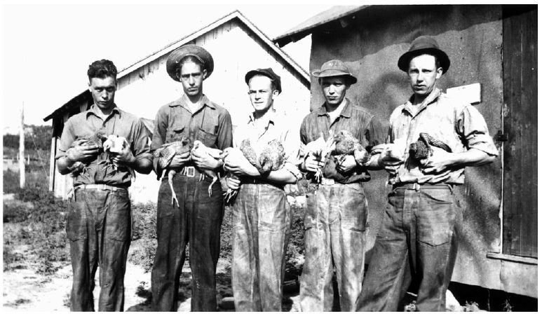

新政试图改写美国政治经济规则、旨在集中规划美国生产活动的初步尝试，包括两大主要议程。这两项议程与其说是为了应对当时出现的危机，不如说是为了完成第一次世界大战期间未竟的雄心壮志。两项议程的主要组成部分，都在政治上失败了；但是，它们的失败却给美国如何维护其资本主义制度指出了一条新路。
如果说罗斯福政府在当政的头一年就通过调整货币和银行政策把美国推上了复苏的道路，该政策对稳定世界经济却几乎毫无帮助。事实上，随着美国的货币政策吸引黄金流入该国，其他国家因为货币供应量萎缩而颇感压力。上任第一年，罗斯福就十分清楚地表明：只要美国的局势仍被阴云笼罩，他便无暇顾及世界上其他国家。1933年夏，罗斯福向伦敦国际经济会议传话，称“稳健的内部经济体制对一国福祉的重要程度”要远高于在国际会议上所能达成的任何协定，从而使此次会议无果而终。 [175] 于是，世界上其他国家的人民，都需要自食其力、自行寻找摆脱危机的道路。
一些国家脱离了金本位制，开始用自己的方式摸索复兴之路，例如在昔日的殖民帝国体系内部建立起排他性的贸易关系。无论在什么地方，商品价格的下跌都无情地打击着农民，而许多殖民地国家除农业外又几乎没有其他支柱行业。于是，像从前一样，殖民地发现自己受到帝国主子的摆布。拉美国家通过寻求双边贸易协议来确保本国能够采购商品，巴西向德国售卖咖啡以购买德国的机械，阿根廷则向英国出售牛肉。
随着经济危机持续发展，一些政党通过发起建立新的社会组织体系来获取支持。法西斯主义和共产主义运动承诺用多种形式的国家社会主义来控制国民经济并恢复稳定，以此强化自身力量。反帝国主义运动应运而生，承诺带领殖民地世界身陷困境的农民夺回独立。 [176] 世界各地遭受大萧条影响的人民，都在寻求某种能让他们免遭眼前这场灾难吞噬的全新社会形式。但美国是个例外：当同样的压力向美国袭来、当受苦受难的美国人民有时看到自己和别国同侪处于相似的境遇时，他们却以看似因循守旧而平淡无奇的方式来推进根本性变革。例如，一位主张大力发展美国农业的人宣称：“美国农业一直屈从于美国工业，就像一又四分之一个世纪以前英属殖民地屈从于英国一样。” [177] 但是，与在经济上处于屈从地位的殖民地不同，美国农民在立法机构中有自己的代表——事实上，这些代表的数量，要比按实际农业人口数量所应分配到的名额更多。因此，虽然新政包含一些经济规划方面的试验性举措，但是这些策略之所以被采纳，并非真正为了应对什么急迫的危机，而更多的是为了回应人们对美国农业地位感到不满而产生的积怨。
到美国陷入大萧条时，人们已连续70年不断地敦促联邦政府采取行动支持农民。美国内战时期的立法——主要是《宅地法》、《太平洋铁路法》和《莫里尔土地拨赠法》——鼓励美国人向西部挺进，以期人们可以在那里找到土地安顿下来开辟家庭农场。内战结束后重建南方时，政府也曾短暂地鼓励人们到那里去建立更多由单个家庭经营的农场。然而，美国的小农场主们很快就陷入了悲痛之中：干旱、债务和害虫侵袭以不同的组合形式轮流上演，而农田也日益集中到了少数大农场主手里。
按照某部美国经济史著作的说法，“农民总是怏怏不乐” [178] 。“总是”这个词也许有点儿夸张，但即便如此，在各种不利因素的叠加作用下，美国农民在整个20世纪早期几乎都处于边缘地位。昂贵的创新科技让农业更像工业生产而不是家庭营生。信誉和效率取代勤勉和吃苦耐劳，成为农业生产中的主要美德。全球交通运输网络的扩张，更以显而易见的方式将农民推向国际市场与同行竞争。美国农民在面临越来越多海外竞争的同时，也看到了本国关税政策是如何保护那些面临类似压力的制造业同胞的。当时，在许多情况下，国会都赞成利用进口税阻止外国工厂在美国市场上销售产品。农民们看到，在关税的保护下，美国制造业没有了被国际竞争者削弱的后顾之忧，可以降低产量并提高价格。与此同时，美国人民成群结队地拥向城市，城市生活及其相关的问题成为全国讨论的焦点，农业则被边缘化了。
尽管农业在美国经济上和文化上的重要性逐渐降低，但农民对美国政治的影响力仍然超乎寻常。美国参议院按州分配议席，并不考虑各州人口的多寡；这样一来，那些以农业生产为主、人口较少的州，就获得了超出其人口比例的代表权。因此，在人数减少后，农民仍保持了对国家政治的强大影响力，即便这一影响力有所衰退。此外，虽然1920年人口普查数据首次显示更多美国人生活在城市而非农村，但国会并未按人口比例的变化重新分配众议院的议席，这导致美国农村人口在众议院所占的席位要多于他们实际应得的份额。 [179]
进入1920年代，第一次世界大战的影响加剧了美国农民长期以来的苦闷。战争期间，美国用船向其盟友输送了肉类和谷物，而自己国家的人民则缺肉少粮。美国人因此脱离了传统的饮食习惯，学会在饮食中加入更多容易消化的蔬菜和水果，发现反而比以前更健康了。此外，随着禁止生产和销售酒精饮品的法律被陆续批准生效，谷物消耗量也相应减少。对美国农场主要产品的需求由此骤减。 [180]
与此同时，农民却增加了他们的产量。当欧洲大国发动战争时，美国农民忙着翻地耕耘给他们提供粮食。如果没有这一需求，这些土地可能会闲置下来或用作牧场。战争结束，这种特殊的需求随之停止，但美国农民总体上还是保持了较大的产能，希望借此重拾往日的辉煌。 [181] 由于需求下降、供应增加，农产品价格出现了下滑。如果有足够多的人能转行放弃农业并把土地移为他用，农产品价格还有可能得以回升。但是，许多美国农民并不想转行，只求能做收入更高的农民。他们聚集起来进行游说，希望政府通过立法，让他们能与那些在城市生活的同胞们享有同等待遇。他们想继续从事农业，但也希望过上和职员或工人一样舒适的日子。越来越多的农民把第一次世界大战之前的时段视为黄金时代，那时农产品能卖到公平的价格。
为了回到那个工农业之间相对平等的时代，农民们认为他们必须像制造业者那样安排自己的经济活动。这意味着通过抑制生产来控制价格。如后来将在富兰克林·罗斯福手下任农业部部长的亨利·A.华莱士在1922年所说的，“当产品价格低于生产成本时，美国钢铁公司可以减少产量，那么农民们应该也可以这样做” [182] 。在华莱士及其盟友看来，美国钢铁公司象征着所有工业企业，它们享受到的便利是农民们所没有的：制造业者在关税的保护下免于与外国同行竞争，而他们的业务规模和范围之大，足以让一间中央办公室里做出的决定左右整个国内市场。就像一位支持者所说的，为农业提供类似的便利，首先需要“用关税保护农民” [183] 。但是，简单地用关税阻碍进口并不能让情况好转，因为美国的农产品产量已经远远超出了国内市场的消化能力。因此，为获得工业部门所享有的便利，农民需要使用更多手段。此外，由于农业生产者太多也太分散，无法就集体行动达成一致，像大企业决策者那样通过集中行动来提高效率，对农民而言可望而不可即。
1920年代初，农场拥护者们草拟了一个绕过这些障碍的方案。伊利诺伊州莫林耕犁公司主席乔治·皮克及其贸易伙伴休·约翰逊认识到“向破产的农民出售耕犁是行不通的”。他们提出了一个构想，并获得了国会中农场集团的支持。皮克和约翰逊此前都与战时工业委员会合作过，他们认为：在第一次世界大战期间，战时工业委员会调控着美国的生产，对于如何管理一个几乎完全与世界市场隔绝的经济体有着丰富的经验，这样的经验适用于现在的国家。在皮克和约翰逊的构想中，关税应该阻止农产品进口；政府企业应该买下所有剩余的农作物并设法将它们销往国外；而农民营销协会则可以联合起来协调国内生产。皮克的这一计划为《麦克纳利——豪根法》奠定了基础，该法案于1920年代末在国会获得通过，但被卡尔文·柯立芝总统否决了，否决的原因是这样做会过度干扰自由市场并抬高城市消费者的消费价格。赫伯特·胡佛在任职期间采用了一个折中的办法。他早在大股灾发生前的1929年就曾支持国会建立了联邦农业委员会，该委员会有权向农民发放贷款并购入多余的农作物；同时，他也鼓励美国农业的从业者们采取联合行动。和胡佛的其他政策一样，这项政策并不足以解决大萧条带来的问题。 [184]
另一些农场拥趸则进一步发展了《麦克纳利——豪根法》中提出的构想，认为类似关税的保护措施可能起不到足够效果，农民也必须降低他们的产量。在农业部工作的经济学家W.J.斯皮尔曼制订了“国内分配”计划：通过检查某种农作物（例如小麦）的国内消费情况，政府可以确定这种商品的国内市场规模，并依此向各州和农场分配适当的市场份额。按所得配额从事生产的农民出售农作物时，除了市价还会得到一份奖金；如果他们的产量超出配额，超出部分只能拿到市价。 [185] 蒙大拿州立大学的农业经济学教授米尔本·L.威尔逊大力推广国内分配计划，他拓展了原有的构想，并敦促农场协会和更大范围内的商业利益相关者加入进来。在成熟阶段，该计划包括自筹资金，以及向商品的加工商（例如，将谷物碾磨成粉的磨坊主）征税以为配额付费。威尔逊在1932年向罗斯福的新政运动提出了这个计划，罗斯福赞成干预性的农业政策，只是（用他的顾问雷蒙德·莫利的话来说）“表述笼统，过于含糊，无法细究” [186] 。
上述围绕美国农业问题的长期思考与各种方案，都反映在了新政期间第一部主要的农业法规，即1933年《农业调整法》当中。该法案开宗明义地宣称它旨在应对“当前的紧急情况”，但实际针对的却是农民长期以来的不满。它意在让政府消除“农产品和其他商品之间巨大且不断加剧的价格不平等，这种不平等导致农民购买力严重受损”。该法案还特别指出，在第一次世界大战搅乱时局之前那些年，市场曾处于理想的平等状态，美国应该重回那种状态。这部法案体现了新政含糊笼统的倾向，它将制定规划的具体机制交由总统决定，又赋予总统削减低产田面积、奖励丰收和向加工商征税的权力——这些都是国内分配计划的诉求。 [187] 此外，这部法律给予了农场协会免受反垄断检控的特权（这使农民集中决策成为可能），并允许农民自行决定是否参与农场协会的各项计划。
罗斯福在农业方面的人事任命，与他的农业政策一脉相承：他任命华莱士为农业部长，又让皮克领导新设的农业调整管理局——该局负责制定生产管理政策。威尔逊则成为农业调整管理局小麦处的负责人。 [188] 意见分歧使这三位联邦农业政策领域的老说客分道扬镳：皮克倾向于通过市场组织削减产量；威尔逊希望以国内分配计划为跳板永久性减少生产面积；华莱士则告诉威尔逊，该计划只有在“我们真正走上国家社会主义的道路”后才有可能奏效，“而我个人很倾向于认为美国确实正在走向这条路” [189] 。在法律规定和总统意志都模糊不清的情况下，上述分歧进一步加深了解决问题的难度。
1933年春，当农业调整管理局成立并着手工作时，棉农们已经种上了新棉。考虑到棉花存量已经相当可观，农业调整管理局要求棉农犁除地里的新棉以换取补贴，以此制止已经处于低位的棉价进一步下滑。农业调整管理局派人分头前往数百个县，试图说服农民挖出不久前才种下的作物。他们遇到了任何一种官僚体制都存在的典型问题——需要的时候，空白合同表格永远都不够用。农民们对产量估算的公平性则满腹牢骚，怀疑估算员会偏袒他们的朋友：“估算员给我们的价码肯定不公平……他有自己青睐的对象。” [190] 不仅如此，补贴犁除作物的支票还常常迟到。
除了这些行政管理上的寻常挑战，农业调整管理局在完成具体的农业任务方面也遇到了麻烦。由于骡子长期以来接受的都是避免把棉作物犁起来的训练，现在让它们完成犁除棉作物的任务十分困难。一些地区由于天气恶劣影响了开犁；而另一些地区天气良好，农民们又舍不得把长势不错的作物犁掉。有时，县治安官不得不派拖拉机强制执行犁除合同并向违约的农民收取费用。 [191] 等补贴犁除作物的支票终于到达，地主有时还会扣押款项不发给佃户。
如果说美国政府罔顾数百万国民衣物短缺而摧毁棉花的行径令人愤怒，那么在饥荒期间销毁食物的做法就堪称直接动手伤害民众了。为使养猪业的收入提升到所谓的合理水平，农业调整管理局决定必须屠宰数百万头猪仔，以免猪肉在几年后供大于求。一位密苏里州的农业领袖事后评论道：“一方面，上百万人正经历着失业、饥饿和疾病的折磨；另一方面，粮食、羊毛和棉花却统统过剩，多到让人不知所措。这种愚蠢至极的情况，真是对我们民族天资禀赋的莫大嘲讽。” [192]

图5平民保育团成员在弗吉尼亚州琼斯维尔养禽场工作
农业政策的设计师们既无意解决美国农村贫困这个亘古难题，也无意解决大萧条所带来的新问题。《农业调整法》的着眼点在于消除农村居民与城市居民在购买力方面的不平等，以回到某个臆想的黄金时代，而非大步迈入一个美丽的新世界。对农产品实施累退税制，意味着无法通过补贴大多数消费者来刺激经济复苏。在这套税制下，农产品加工税实际上是由消费者来承担的，城市买家受损而农村卖家受益。
大部分农民支持这样的政策。例如，棉农们一旦发现那些未参与国内分配计划的农民在不必牺牲部分作物的情况下也能从价格上涨中受益，就进行游说，要求通过立法强制减少棉花的种植面积。作为回应，国会通过了1934年《班克黑德棉花控制法》，向所有配额之外的送轧棉花征税。该法律要求在试行一年后举行全民公投以决定其去留，而全美近90%的棉农都投票保留。 [193]
支持国内分配计划的经济学家约翰·D.布莱克于1936年指出：农业调整管理局的目标本来就是增加农民的相对收入，而不在于使国民经济从大萧条中迅速复苏。就实现经济迅速复苏而言，较之于提高农民收入，提高企业利润无疑是更优选择，因为更高的企业利润往往能带来更多投资，也能通过提高工资造就出更多的消费者。至于为农业调整管理局辩护的最佳理由，布莱克写道，即“该机构带给我们的复苏要比通过提升商业利润所实现的复苏更优质 ，因为……它所带来的这种复苏在分布上更均衡 ”——也就是说，这种经济复苏的程度在农村地区和城市地区之间相对一致，而不是各个阶层都能从经济复苏中均衡收益。其实，就算是上述辩护也并不完全站得住脚，布莱克指出：农产品价格虽然上涨了，但其中三分之二的涨幅大概是干旱和美元贬值的结果，而与农业调整管理局采取的行动无关。 [194] 况且，尽管农民对农产品价格的上涨满怀欣喜，但他们也因自己所需物品价格出现了同步上涨而唉声叹气。他们把物价上涨归罪于那些在农业法案颁布仅一个月后就被审议通过的、旨在规制经济的其他重要新政法案。
和农业政策一样，工业政策也建立在依靠集中权威控制价格的既有套路之上，希望回归所谓的“黄金时代”。这个所谓的“黄金时代”，是指第一次世界大战期间——那时，政府和商界领袖们通过战时工业委员会共同倡导在生产领域协同指挥、通力合作。当战时工业委员会的老将乔治·皮克转任农业调整管理局局长时，他的老战友休·约翰逊则一手创建并亲自领导了工业界的“调整管理局”——全国复兴总署。
至迟从19世纪末的大兼并运动时开始，美国商界的主要人物们对于不受约束的自由竞争原则就抱有怀疑态度，这种原则导致了商品价格走低、损害了他们本可从商品和服务中获取的利润，有时甚至还让他们亏本。越来越多的商人宣称他们相信“若能通过联邦层面的规制措施‘全面推广’一种合理的经济定价”，就能“完全并且永久地消除不公平降价” [195] 。因此，虽然美国商人因自身行业特点而享有一定优势，但仍面临着和美国农民类似的问题。制造业要比农业更便于集中控制。科技进步和工艺创新使企业主得以通过引入机械设备和提升管理效率等方式来增强生产效率，从而降低了对熟练技工的依赖，将工厂车间更加牢固地控制在他们自己手中。事实上，在那个时代，无论联邦反垄断法实际上所能起到的作用多么微不足道，该法规大概是阻碍美国制造业走向高度集中的唯一屏障。
战时工业委员会让实业家们明白：如果能避免与政府对立，与政府携手合作，他们就可以通过控制生产来调控价格、防止罢工，同时赚取可观的利润——这一切看起来还充满了爱国主义精神。大萧条又让企业家们有机可乘，他们四处游说、争取让政府采取应急措施，以便名正言顺地抬高商品价格。
大萧条时期的第一次官商勾结，始于胡佛时代的“现在就买”运动。记者、政客及其他推动者呼吁那些曾带动1920年代繁荣的消费者们通过加大购买力度帮助美国经济重归繁荣。然而，这次宣传鼓动并未奏效。1931年，《商业周刊》报道称：“‘现在就买’的热潮似乎已经消退……消费者们越来越不确定应该如何使用手中的金钱。” [196] 到了罗斯福执政时期，情况已经很明确：单靠耍嘴皮子不可能提升购买力。罗斯福询问劳工部部长弗朗西斯·珀金斯：能否拿出一个方案，令工会也能参与到旨在削减竞争的工业政策当中去？珀金斯是美国第一位女性内阁成员，罗斯福担任纽约州长时，她就在罗斯福麾下效力，在纽约州倡导通过立法确定最低工资和最长工时。面对罗斯福的询问，珀金斯提议设立工业委员会，以便劳资双方和政府的代表可以坐到一起。还要拥有组织权，工会才能参与工业政策的制定和运行；然而，尽管1914年《克莱顿法》规定工会不受反托拉斯法限制，但最高法院在此后的判例中仍对工会组织权持有异议。对此，美国劳工联合会辩称，组织权能够提升“购买力” [197] 。
一位效力于新成立的农业调整管理局的经济学家认为，工业法案应该与农业法案一样，追求更均衡而非更迅速的复苏：“我认为，法案应该在提高工资、改善工作条件、保护集体谈判等方面有所作为，以便更好地平衡劳资关系，从而刺激消费者的兴趣和购买欲。” [198]
与《农业调整法》相似，工业法案也反映出该领域的立法进程受到多种力量推动。1933年《国家工业复兴法》推出了包括提供公共工程在内的多种措施，为罗斯福创建那些推行以工代赈计划的若干机构铺平了道路。但是，该法案的主要条款，却在于通过珀金斯所构想的那类工业委员会让劳资双方、让政府和消费者的代表商讨管制规程，强化对工业政策的管控。国会搁置了反托拉斯法，允许企业在两年内实施价格垄断，并授权总统直接或委托其他机构制定产业运营方面的行业守则，以确定公平竞争的基础。在1933年《国家工业复兴法》第一章第七节第一款中，法律要求上述行业守则保证：
那么，总统将如何行使他手中的新权力呢？工会、商业团体和消费者权益组织都拭目以待。
罗斯福以战时动员的方式推出了全国复兴总署，他援引“1917年和1918年间的那场伟大合作”作为先例，并任命退役将领休·约翰逊为该机构负责人，以满足那些热切希望从战时工业委员会获得灵感的实业界人士。约翰逊为全国复兴总署设计了一个军事标志：一只蓝色的鹰一爪紧握齿轮，另一爪则紧握一束闪电。他试图沿用战时的比喻来动员消费者：“这一次，在家劳作的主妇而非身穿制服的士兵将拯救我们的国家……家庭主妇们发起冲锋的时刻已经来临。” [200]
大公司管理者对企业的控制力更强、对自身业务的规模和范围更加熟悉，同时也是休·约翰逊青睐的对象，所以这些要求对工业产品提价的人在《国家工业复兴法》颁布后的博弈中占了上风。至1933年夏末，美国的大多数主要产业都制定了行业守则；然而，只有在不到一成的产业中，由全国复兴总署牵头组织的行业守则制定机构吸收了至少一名劳工代表参与，而吸收消费者代表参与制定行业守则的产业数量还要更少。这样一来，许多行业守则其实是实业家与政府官员协商确定的，而许多官员在此之前不久才弃商从政。就像一位观察家谴责的，这是一场“商业领袖和伪装成政府官员的商人之间的交易” [201] 。劳工领袖们发现，管理层可以通过创立受资方控制的工会绕过第一章第七节第一款的有关规定。劳动者们开始抱怨物价上涨而工资却并未增加。全国复兴总署变得越来越像批评者口中的“旧政”衙门，重复着胡佛时代“现在就买”的口号；而民众的反应一如既往——“我们拿什么来买呢？”一位农民追问道。 [202]
全国复兴总署也让一些小企业主深感恼怒。许多小企业的设备无法满足行业守则中那些充斥着官僚主义的要求。与大企业相比，小企业的意见也不太可能被行业守则制定机构所采纳。行业守则中维持固定价格的主要措施，都是为大企业量身定制的，以防止行业内的小众竞争对手打价格战。而在大萧条时期，为弱者发声是一种难以抗拒的政治机会。正如弗朗西斯·珀金斯所评论的，“一用‘小’字，你就总能博得同情……人们对待小企业的感情，就像对待一只可爱的小狗一样” [203] 。为了回应小企业主的抱怨，全国复兴总署成立了一个专门委员会以调查相关投诉。调查由知名律师克拉伦斯·达罗牵头，结果发现在接受调查的八个由全国复兴总署参与管制的行业中，有七个存在“垄断行为”；调查还发现小企业受到了“残酷的压迫” [204] 。
这样的情况持续到1934年，全国复兴总署在批评中停滞不前。约翰逊引咎辞职，他的岗位由一个委员会取而代之。1935年初，一项对全国复兴总署的审查发现，该署只有两例按行业守则对企业进行处理的情况。随着反托拉斯法的两年搁置期临近结束，参议院不再对罗斯福言听计从，只表决同意让全国复兴总署继续存在有限的一段时间。 [205] 在众议院表决前，最高法院就判决全国复兴总署违宪——其实，在罗斯福随后发表的私人言论里，我们可以很清楚地发现他也认为全国复兴总署令他“十分头疼”，而总署的一些政策“非常错误” [206] 。
不久之后，最高法院也裁决农业调整管理局因违宪而必须撤销。对于最高法院来说，这两个机构以同样的方式违反了宪法：它们在美国国内行使了前所未有的、未经授权的强制性行政权力。正如亨利·华莱士所言，这些机构具有“国家社会主义”的倾向。不难想象，即使身处令人绝望的危机中，大多数美国人仍对这种倾向抱有疑虑。
最终，祛除了那些更具国家中心主义和管制色彩的成分后，农业调整管理局和全国复兴总署中的关键部门，都被国会以立法的形式保留了下来。由于上述两项计划都不以迅速复苏为目标，而旨在从城市向农村、从管理层向劳动者和消费者重新分配财富和权力，它们在罗斯福的重要选区中颇受欢迎。新政在处理政治经济问题方面的此类政策，在大萧条结束很长时间之后仍继续发挥着作用。